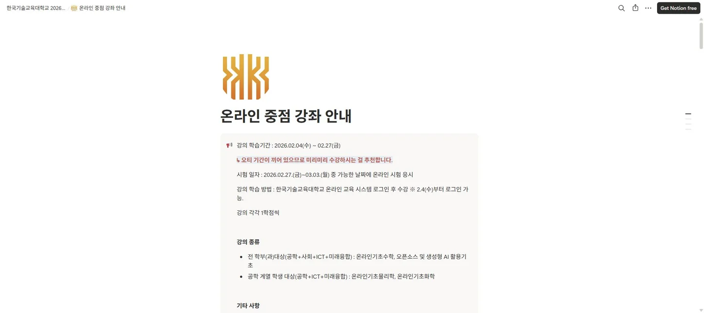
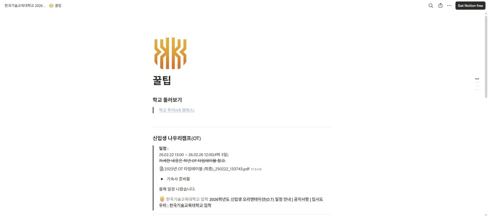
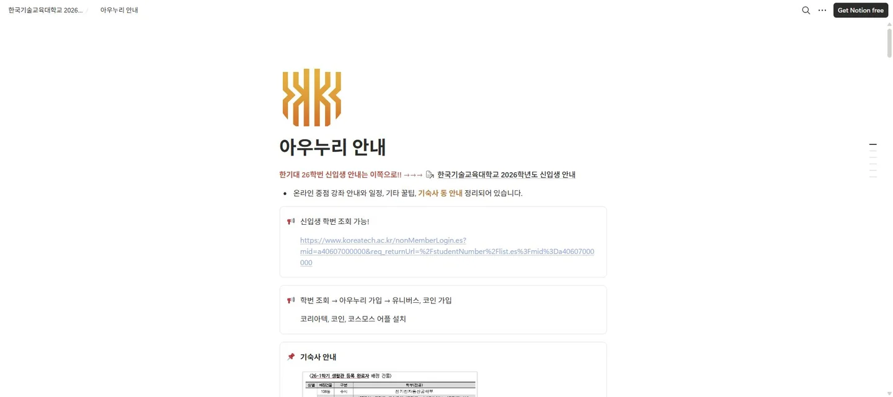

한기대 26학번 신입생 가이드
프로젝트 개요
한국기술교육대학교 26학번 신입생들을 위해 제작한 온라인 중점강좌 안내 사이트입니다. 노션을 활용하여 강좌 소개, 수강 방법, 과제 가이드 등 신입생에게 필요한 정보를 직관적으로 정리했습니다.
주요 기능 / 내용
- 온라인 중점강좌 전체 안내 및 소개
- 과제 및 평가 기준 안내
- 자주 묻는 질문(FAQ) 모음
- 유용한 외부 링크 및 자료 큐레이션
- 노션 퍼블릭 페이지로 누구나 접근 가능
노션 가이드 화면



나의 역할
1인 개발
기획부터 제작까지 전 과정을 단독으로 진행했습니다.